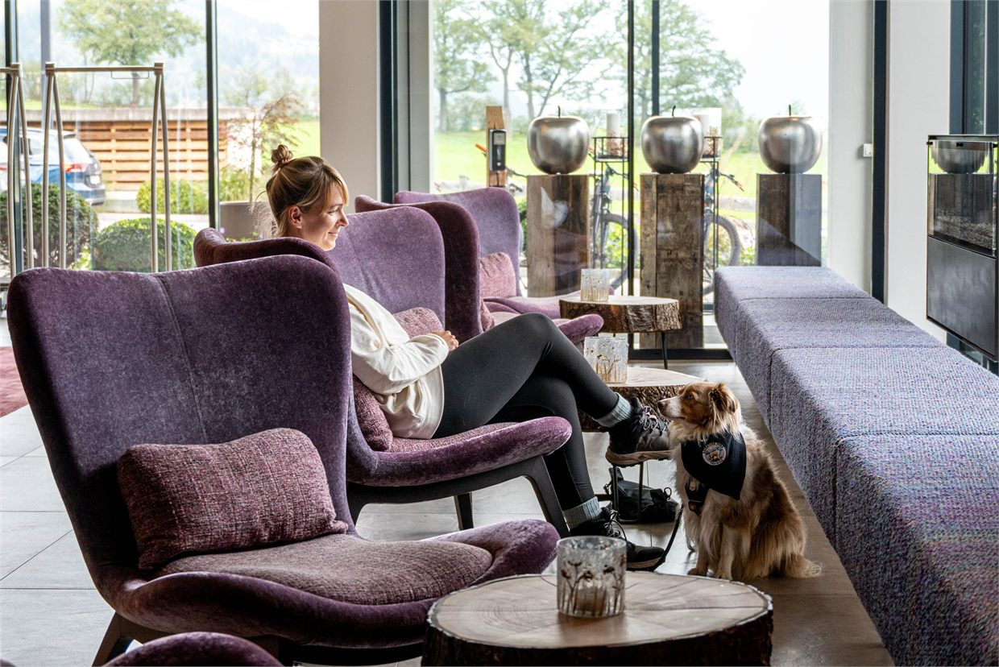

Beratung für hundefreundliche Unternehmen
Hunde erfolgreich in den Arbeitsalltag integrieren.
Individuelle Bürohunde-Konzepte – damit Hunde, Mitarbeitende und Arbeitsabläufe im Unternehmen zuverlässig zusammenpassen.
Warum Bürohunde
Hunde im Büro können ein echter Mehrwert sein …
Attraktiver Arbeitgeber
Den eigenen Hund mit ins Büro bringen zu können, ist für viele ein echter Pluspunkt – und kann ein guter Grund sein, auch wieder häufiger vor Ort statt im Homeoffice zu arbeiten.
Entspannter Arbeitsalltag
Hunde können zu einer entspannten, angenehmen Arbeitsatmosphäre beitragen und damit Kreativität und produktives Arbeiten unterstützen.
Stärkeres Miteinander
Hunde bringen Menschen zusammen, schaffen Gesprächsanlässe und können so auch die Verbundenheit im Team stärken.
… wenn die Rahmenbedingungen stimmen.
Ruhe am Arbeitsplatz
Wo hat der Hund seinen Platz? Wie gelingt es ihm, auch im Büro wirklich zur Ruhe zu kommen – und was braucht es dafür im jeweiligen Arbeitsumfeld?
Begegnungen & gemeinsamer Alltag
Wie werden Begegnungen im Flur gestaltet? Was passiert bei Besuch? Und wie funktioniert der Alltag, wenn mehrere Hunde gleichzeitig im Unternehmen sind?
Klare Regeln für alle
Wer darf die Hunde ansprechen oder füttern? Welche Bereiche sind für Hunde vorgesehen – und welche nicht? Und wie wird mit Situationen umgegangen, die für Hunde oder Mitarbeitende schwierig werden?
Genau hier setzt Office Dogs an.
Unser Ansatz
Individuelle Lösungen statt Standardkonzepte
Arbeitsabläufe, Räumlichkeiten und Teams unterscheiden sich – genauso wie die Hunde selbst.
Deshalb gibt es bei Office Dogs keine pauschale Lösung. Wir schauen uns die Situation direkt in Ihrem Unternehmen an und entwickeln daraus Strukturen und Regeln, die zu Ihrem Arbeitsalltag passen.
Das Ziel: ein Bürohunde-Konzept, das nicht nur auf dem Papier gut klingt, sondern sich im täglichen Miteinander umsetzen lässt.
Zusammenarbeit
So entsteht Ihr Bürohunde-Konzept
Analyse vor Ort
Ich schaue mir Arbeitsabläufe, Räumlichkeiten und die vorhandenen oder geplanten Mensch-Hund-Teams direkt in Ihrem Unternehmen an.
Dabei geht es nicht nur um das Verhalten der Hunde, sondern auch um die Anforderungen Ihres Teams und Ihres Arbeitsalltags.
Individuelles Konzept
Auf Grundlage der Analyse entstehen klare Regeln, Strukturen und konkrete Lösungen für Ihr Unternehmen.
Diese werden in einem individuellen Office Dogs Guide festgehalten und stehen Ihrem Team anschließend als Orientierung für den Büroalltag zur Verfügung.
Direkt in die Praxis
Wir bleiben nicht bei der Theorie.
Die wichtigsten Maßnahmen setzen wir direkt vor Ort um und schauen uns typische Situationen gemeinsam an – dort, wo sie später auch funktionieren müssen.
Weitere Begleitung
Unternehmen verändern sich.
Kommen weitere Hunde oder Mitarbeitende dazu oder verändern sich Abläufe, kann auch das bestehende Konzept angepasst werden. Auf Wunsch begleite ich Sie dabei weiter.
Leistungspaket
Bürohunde-Analyse & Konzept
Der Einstieg für Unternehmen, die Bürohunde von Anfang an auf eine verlässliche Grundlage stellen oder bestehende Strukturen professionell weiterentwickeln möchten.
Enthalten sind:
- Analyse vor Ort in Ihrem Unternehmen
- Einschätzung von Räumlichkeiten, Abläufen und Mensch-Hund-Teams
- Individueller Office Dogs Guide
- Praxis-Coaching direkt vor Ort
- Konkrete Handlungsempfehlungen
- Telefonische Nachbesprechung innerhalb von vier Wochen
Investition
Für größere Standorte oder mehrere Teams erstelle ich Ihnen gerne ein individuelles Angebot.

Warum Office Dogs
„Ein gutes Bürohunde-Konzept berücksichtigt nicht nur den Hund – sondern das gesamte Unternehmen“
Als Hundetrainerin bringe ich die fachliche Einschätzung von Hundeverhalten mit den Anforderungen des Unternehmensalltags zusammen.
Denn ob ein Bürohunde-Konzept funktioniert, hängt nicht allein davon ab, ob ein Hund grundsätzlich bürotauglich ist.
Entscheidend ist das Zusammenspiel aus Hund, Mensch, Räumlichkeiten, Arbeitsabläufen und klaren gemeinsamen Regeln.
Genau dort setzt meine Beratung an: mit einem Blick auf das gesamte Unternehmen und Lösungen, die sich im Alltag tatsächlich umsetzen lassen.
Kontakt
Lassen Sie uns über Bürohunde in Ihrem Unternehmen sprechen.
Sie möchten Hunde erfolgreich in Ihren Arbeitsalltag integrieren oder bestehende Strukturen weiterentwickeln?
Dann schauen wir gemeinsam, welche Rahmenbedingungen Ihr Unternehmen braucht und wie ein Bürohunde-Konzept aussehen kann, das zu Ihrem Team und Ihrem Arbeitsalltag passt.